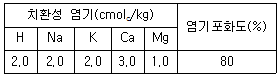

유기농업기사 (2009-07-26 기출문제)
1과목: 재배원론
1. 다음 중 작물의 도복과 가장 관련성이 큰 형질은?
- 잎
- 숙기
- 키
- 가지수
(정답률: 알수없음)

2. 작물을 생육적온에 따라 분류했을 때 저온작물인 것은?
- 콩
- 벼
- 감자
- 옥수수
(정답률: 알수없음)
3. 혐기 상태에서 단독으로 유리질소를 고정하는 토양 미생물은?
- 근류균
- Azotobacter 속(屬)
- Clostridium 속(屬)
- Azotomonas 속(屬)
(정답률: 알수없음)
4. 일장형(日長型)의 설명으로 틀린 것은?
- 단일식물에는 조 ㆍ 기장 ㆍ 옥수수 ㆍ 콩 등이 있다.
- 장일식물은 유도일장의 주체가 장일에 있으며, 한계일장은 장일쪽에 있다.
- 개화에 일정한 한계일장이 없고 대단히 넓은 범위의 일장에서 개화하는 식물을 중성식물이라 한다.
- 좁은 범위의 일장에서만 화성을 유도 촉진 되는 식물을 정일성식물(定日性植物)이라 한다.
(정답률: 알수없음)
5. 논에서 줄사이 30cm, 포기사이 15cm의 재식거리로 모를 심는 경우 3.3m2당 몇 주가 소요되는가? (단, 소수점 이하는 절사한다.)
- 70주
- 73주
- 76주
- 79주
(정답률: 알수없음)
6. 내한성(耐旱性)은 품종 간에 차이가 있다. 내한성이 간한 품종의 세포 특성에 해당하는 것은?
- 세포가 크고 삼투압이 낮다.
- 세포가 작고 삼투압이 높다.
- 세포가 작고 삼투압이 낮다.
- 세포가 크고 삼투압이 높다.
(정답률: 알수없음)
7. 광부족에 대한 민감도가 가장 낮아 일사가 좋지 못한 곳에서도 적응할 수 있는 작물로만 짝지어진 것은?
- 벼, 조
- 당근, 순무
- 목화, 목초
- 감자, 강낭콩
(정답률: 알수없음)
8. 생리적 산성비료는?
- 용성인비
- 석회질소
- 칠레초석
- 황산암모늄
(정답률: 알수없음)
9. 작물의 생육기간 중 일어나는 가뭄재해를 줄일 수 있는 방법으로 거리가 먼 것은?
- 비닐멀칭
- 중경제초
- 배수관리
- 답압(踏壓)
(정답률: 알수없음)
10. 저온에 의한 종자의 춘화처리 시 버널리제이션 효과에 영향을 거의 미치지 않는 요인은?
- 산소
- 수분
- 광
- 탄수화물
(정답률: 알수없음)
11. N. T. Vavilov가 수집 분류한 주요 작물 재배기원 중심지 중 쌀보리는 어느 지역에 해당 하는가?
- 중국 지역
- 남아메리카 지역
- 중앙아시아 지역
- 지중해 연안 지역
(정답률: 알수없음)
12. 작물의 수량을 지배하는 3대 요인이 아닌 것은?
- 유전성
- 환경조건
- 경영비용
- 재배기술
(정답률: 알수없음)
13. 여름철에 벼가 장해형 냉해를 가장 받기 쉬운 시기는?
- 묘대기
- 분얼초기
- 감수분열기
- 출수개화기
(정답률: 알수없음)
14. 수중에서 발아하지 못하는 종자로만 짝지어진 것은?
- 무, 가지, 메밀, 귀리
- 담배, 토마토, 당근, 상추
- 벼, 상추, 당근, 셀러리
- 벼, 고추, 가지, 파
(정답률: 알수없음)
15. 수분이 부족할 때 내건성을 증대시키는 식물호몬은?
- Auxin
- Abscisic acid
- Cytokinin
- Ethylene
(정답률: 80%)
16. 수해에 대한 설명으로 틀린 것은?
- 정체된 고온의 탁수인 경우 벼의 수해가 가장 작다.
- 관수해의 정도는 작물의 종류나 품종 간 차이가 크다.
- 벼의 침관수 피해가 가장 큰 시기는 수잉기이다.
- 침수 후에는 반드시 병충해 방제를 해야 한다.
(정답률: 알수없음)
17. 산야에서 채취한 과실을 먹고 던져 둔 종자에서 똑같은 식물이 자라는 것을 보고 파종이라는 관념을 배웠을 것이라고 추정한 사람은?
- G. Allen
- De Candolle
- H. J. E. Peake
- P. Dettweiler
(정답률: 60%)
18. 이랑 만들기에 대한 설명으로 옳은 것은?
- 한해(旱害)를 받기 쉬운 작물은 높은 이랑에 재배한다.
- 여름작물은 동서이랑이 유리할 경우가 많다.
- 고구마는 높은 이랑에 재배하는 것이 유리하다.
- 건조지에서는 대체로 높은 이랑이 유리하다.
(정답률: 50%)
19. 방사선 동위원소를 이용한 방사선 조사의 장점으로 가장 적합한 것은?
- 선량을 조절하기 쉽다.
- 희망할 때 중지할 수 있다.
- 고선량을 장기간 조사해야 한다.
- 생육의 특정시기에 처리할 수 있다.
(정답률: 알수없음)
20. 다음 중 연작장해가 가장 적은 것은?
- 딸기
- 오이
- 참외
- 수박
(정답률: 알수없음)
2과목: 토양비옥도 및 관리
21. 토양을 구성하는 산화물의 함량 순서로 옳은 것은?
- Fe2O3(산화철) ＞ Al2O3(반토) ＞ SlO2(규산) ＞ CaO(석회)
- SlO2(규산) ＞ Al2O3(반토) ＞ Fe2O3(산화철) ＞ CaO(석회)
- SlO2(규산) ＞ Al2O3(반토) ＞ CaO(석회) ＞ Fe2O3(산화철)
- CaO(석회) ＞ SlO2(규산) ＞ Al2O3(반토) ＞ Fe2O3(산화철)
(정답률: 알수없음)
22. 다음 표에 표시된 염기포화도가 80%인 치환성 염기를 보유한 토양의 양이온치환용량cmolc/kg은?

- 4
- 8
- 10
- 12
(정답률: 알수없음)
23. 습한 논토양에서 건토효과로 나타나는 현상은?
- 떼알 형성량이 많다.
- 유화수소 생성이 많아진다.
- 메탄 생성이 많아진다.
- 가급태 질소가 많아진다.
(정답률: 알수없음)
24. 강우에 의한 토양의 침식에 크게 영향을 주는 인자와 가장 거리가 먼 것은?
- 강우시간
- 유거수의 양
- 토양 투구력
- 토양의 분산율
(정답률: 알수없음)
25. 토양조사의 목적이 아닌 것은?
- 토지 가격의 산정
- 합리적인 토지 이용
- 적합한 재배 작물 선정
- 토지 생산성 관리
(정답률: 알수없음)
26. 지표면 피복의 직접적인 효과 및 피복재료에 대한 설명으로 거리가 먼 것은?
- 지표면 피복은 유거수의 유거속도를 줄인다.
- 지표면을 피복하면 입단형성이 촉진된다.
- 지표면 피복은 강우에 의한 토양입자의 분산을 경감시킨다.
- 탄질률이 높은 재료를 지표면 피복에 이용한다.
(정답률: 알수없음)
27. 식물 세포벽을 구성하는 유기물 구성 성분 중 분해속도가 매우 늦으며 아직도 그 구조가 완전히 밝혀지지 않은 물질은?
- 셀롤로오스
- 단백질
- 리그닌
- 지방류
(정답률: 알수없음)
28. 토양분류에 따른 토양목 중 습한 지역에서 주로 생성되며 유기물 집적이 많은 것은?
- Histosols
- Vertisols
- Oxisols
- Andisols
(정답률: 알수없음)
29. 식물의 양분흡수 이용능력에 직접적으로 영향을 주는 요인으로 거리가 먼 것은?
- 뿌리의 표면적
- 뿌리의 호흡작용
- 근권(根圈)의 탄산가스 농도
- 양분 활성화와 관련되는 뿌리분비물의 종류와 양
(정답률: 82%)
30. 석회를 시용할 때 가장 먼저 떨어져 나오는 것은?
- H+
- Mg+2
- Na+
- K+
(정답률: 알수없음)
31. 토양미생물이 고등식물에 끼치는 유익작용이 아닌 것은?
- 암모니아화성작용
- 질산화작용
- 황산염의 환원
- 미생물간의 길항작용
(정답률: 알수없음)
32. 시설재배 토양의 특성에 대한 설명으로 틀린 것은?
- 염류의 집적
- 토양산도의 저하
- 통기성 향상
- 연작장해의 발생
(정답률: 알수없음)
33. 토양의 유기물 함량이 3% 이고, 그 토양의 탄질률이 10 이라면 토양 중 질소의 함량은? (단, 토양 유기물 중의 C함량은 58%)
- 0.17%
- 1.7%
- 17.4%
- 27.4%
(정답률: 알수없음)
34. 간척지 토양이 벼의 생육에 가장 불리한 원인은?
- 토성
- 염분의 농도
- 토양반응
- 지하수위
(정답률: 알수없음)
35. 토양의 입자밀도와 용적밀도로 알 수 있는 토양의 성질은?
- 공극량
- 점토의 종류
- 공극의 크기분포
- 입상(粒狀) 등 토양구조
(정답률: 알수없음)
36. 제주도 화산회토에 관한 설명으로 틀린 것은?
- 모재는 주로 알로판(allophane)이다.
- 낮은 규반비를 지닌다.
- 비결정질이다.
- 양이온치환용량이 30cmolc/kg 이하로 매우 낮다.
(정답률: 알수없음)
37. 토양분류의 총괄적(형태론적)분류체계에서 사용하지 않는 토양목의 이름은?
- Oxisol
- Histosol
- Alfisol
- Planosol
(정답률: 알수없음)
38. 복합비료 18-18-18 한 포(25kg)에 들어 있는 질소의 양은 얼마인가?
- 18kg
- 4.5kg
- 8.3kg
- 25kg
(정답률: 알수없음)
39. 작물에 의해 흡수되는 질소 양분의 형태로 올바르게 짝지어진 것은?
- N2와 NO
- NH4와 NO2
- N2O와 NO2
- N2와 NO3
(정답률: 알수없음)
40. 사력질 논토양에 대한 설명으로 옳은 것은?
- 배수가 불량하여 암거배수가 반드시 필요하다.
- 양질의 점토함량이 많은 질흙을 객토해야 한다.
- 식질 토양보다 완충력이 커서 산도 변화가 작다.
- 사토일수록 토양환원이 천천히 진행되어 유해물질 농도는 감소한다.
(정답률: 알수없음)
3과목: 유기농업개론
41. 친환경 잡초방제의 근본은 잡초종자의 발아를 억제하여 잡초발생을 억제하는 것이다. 다음 중 이에 해당하는 방법으로 가장 적합한 것은?
- 변온 처리
- 화학자재 투입
- 경작층에 산소 공급
- 지표면에 대한 적색광 차단
(정답률: 알수없음)
42. 녹비작물에 대한 설명으로 틀린 것은?
- 녹비작물을 간작으로 재배하여 주작물과 양분 경합이 나타날 수 있다.
- 녹비작물의 효과는 장기간에 걸쳐 서서히 나타난다.
- 녹비작물을 재배하는 경우 늦은 시기에 수확하는 것이 시비효과가 크다.
- 녹비작물을 재배하면 부수적으로 토양침식 방지효과를 기대할 수 있다.
(정답률: 알수없음)
43. 국내에서 유기축산물을 생산하는데 가장 어려운 점은?
- 판로 확보
- 사육시설 확보
- 유기사료 확보
- 방목기술 보급
(정답률: 알수없음)
44. IFOAM은 무엇인가?
- 유기농업운동연맹
- 국제 유기농업운동연맹
- 스위스 연방 유기농업연구소
- 독일 유기농업재단
(정답률: 알수없음)
45. 유기낙농에서 젖소에게 급여할 사일리지 제조 시에 주로 발생하는 균은?
- 메탄가스
- 곰팡이균
- 프로피온산
- 유산균
(정답률: 알수없음)
46. 유기물이 토양미생물에 의해 분해되는 정도는 무엇에 의하여 결정되나?
- 유기물이 갖고 있는 탄소와 칼륨의 함량비율
- 유기물이 갖고 있는 탄소와 인의 함량비율
- 유기물이 갖고 있는 탄소와 질소의 함량비율
- 유기물이 갖고 있는 질소와 칼륨의 함량비율
(정답률: 알수없음)
47. 친환경 농업이 출현하게 된 배경으로 거리가 먼 것은?
- 국제교역에서도 환경문제가 중요한 쟁점으로 부각
- 미국 및 유럽 등의 식량과잉으로 세계농업정책이 증산위주에서 소비와 교역중심으로 전환하였다.
- 최빈국들를 제외한 대부분 국가에서도 친환경농업의 정착이 유도되고 있다.
- 고투입 현대농법으로 농업환경이 지속가능한 농업생산을 지지하고 있다.
(정답률: 알수없음)
48. 퇴비를 토양에 주었을 때의 효과는?
- 토양을 팽연하게 하여 공극률을 감소시킨다.
- 토양의 보수력을 감소시킨다.
- 토양의 치환능력을 감소시킨다.
- 미생물 활동 및 비료 양분을 공급한다.
(정답률: 알수없음)
49. 유기농업을 이해하기 위해서는 농업생산계의 특징, 한계를 알아야한다. 다음 중 자연생태계와 비교한 농업생태계의 특징으로 옳은 것은?
- 폐쇄체계(closed system)이다.
- 영양물질의 순환이 원활하다.
- 개체군 스스로 생식을 통해 세대를 이어나간다.
- 구조적 ㆍ 기능적 다양성이 축소되어 탄력성이 낮다.
(정답률: 알수없음)
50. 유기농업에서 병충해의 제어방법으로 적절치 않은 것은?
- 윤작을 하여야 한다.
- 토양진단을 통한 최적시비를 행한다.
- 생태계의 섬(buffer zone)을 조성한다.
- 병해충의 박멸을 원칙으로 작물을 재배한다.
(정답률: 알수없음)
51. 유기축산의 사육시설로서 적합하지 않은 것은?
- 가축에게 자연적인 행동이 가능하도록 충분한 공간
- 사료와 식수를 자유롭게 섭취할 수 있는 공간 부여
- 충분한 자연환기와 빛이 유입되는 공간 부여
- 가축에게 개체별로 케이지 사육 공간 부여
(정답률: 알수없음)
52. 유기농업의 실천기술로 가장 거리가 먼 것은?
- 병해충 경감과 토양비육도 증진을 위한 윤작
- 두과작물, 녹비작물 또는 심근성작물 재배
- 토양오염 우려 시 오염된 부분만 제거하고 작물재배
- 유기농산물 인증기준에 맞게 생산 ㆍ 관리된 종자
(정답률: 알수없음)
53. 퇴비 생산 시 퇴비 부숙기간(15일 정도) 중 필요한 최소의 온도는?
- 55℃
- 65℃
- 75℃
- 85℃
(정답률: 알수없음)
54. 식물육종법 중 여교배육종에 대한 설명으로 틀린 것은?
- 양친 A와 B를 교배한 F1을 양친 중 어느 하나와 다시 교배하는 것이다.
- 연속적으로 교배하면서 이전하려는 반복친의 특성만 선발한다.
- 성공하기 위해서는 만족할 만한 반복친이 있어야 한다.
- 여러 번 여교배한 후에 반복친의 특성을 충분히 회복해야 한다.
(정답률: 알수없음)
55. 미생물 농약의 단점으로 옳은 것은?
- 환경에 대한 안전성이 높다.
- 병해충이 내성을 가지기 어렵다.
- 재배환경 등 환경요소에 영향을 받기 쉽다.
- 인축에 해가 거의 없고, 작물의 피해를 주는 사례가 거의 없다.
(정답률: 알수없음)
56. 제1종 가축전염병으로 가축의 사육 시 특히 고려해야 하는 병이 아닌 것은?
- 우폐역
- 구제역
- 소 유행열
- 닭 뉴캐슬병
(정답률: 알수없음)
57. 유기농법을 이용한 염류집적의 대책으로 적합하지 않은 것은?
- 두과작물 재배
- 과다한 수분증발 억제
- 담수 처리
- 무경운 재배
(정답률: 알수없음)
58. 해충의 피해를 줄이기 위한 친환경적 방제법으로 거리가 먼 것은?
- 유아등 설치
- 봉지 씌우기
- 교배대 이용
- 페로몬 이용
(정답률: 알수없음)
59. 상대적으로 육종에 가장 짧은 기간을 요하는 것은?
- 사과나무
- 배나무
- 자두나무
- 벼
(정답률: 알수없음)
60. 포장의 해충을 방제하기 위한 기피식물이나 익충 또는 유용곤충의 밀도를 높게 하기 위한 대표적인 식물이라고 볼 수 없는 것은?
- 금잔화
- 마디꽃
- 멕시코 해바라기
- 쑥국화
(정답률: 알수없음)
4과목: 유기식품 가공.유통론
61. 각 나라별 유기(가공)식품의 규정으로 맞는 것은?
- 한국은 제조 ㆍ 가공에 사용한 원재료의 95% 이상이 유기농산물이어야 한다.
- 일본은 최종제품 중에 유기재료가 99% 이상 있을 것으로 규정한다.
- EU는 최종제품 중에 유기재료가 100% 이상 있을 것으로 규정한다.
- 미국은 제조 ㆍ 가공에 사용한 원재료의 80% 이상이 유기농산물이어야 한다.
(정답률: 알수없음)
62. 선물거래가 가능한 농산물의 조건이 아닌 것은?
- 연간 절대 거래량이 많은 품목일 것
- 장기저장성이 있는 품목일 것
- 선도거래가 선행되지 않은 품목일 것
- 표준 규격화가 어렵고 등급이 다양한 품목일 것
(정답률: 알수없음)
63. 다음 중 살균력이 가장 강한 자외선 파장 범위는?
- 150~160nm
- 200~210nm
- 250~260nm
- 300~310nm
(정답률: 알수없음)
64. 초고압에 의한 식품살균에 대한 설명으로 틀린 것은?
- 가열처리를 하지 않으므로 영양성분, 향기 및 조직감 등의 변화가 적다.
- 오차가 적고 균일한 가공처리가 가능하다.
- 대형화, 연속처리가 곤란하다.
- 수분이 적은 식품이나 다공질의 식품에 부적당하다.
(정답률: 알수없음)
65. 시료액을 100배 희석하여 그 중 0.1mL를 표준평판배지에 분주하였더니 230개의 집락이 형성된 경우 시료액 1mL당 세균 수는?
- 2300
- 23000
- 230000
- 2300000
(정답률: 알수없음)
66. HACCP의 선행요건 중 제조시설 및 기계 ㆍ 기구류 등 설비관리에 해당하지 않는 것은?
- 내수성, 내열성, 내약품성, 내부식성 등의 재질 바닥 자재 설치
- 온도변화를 측정 ㆍ 기록하는 장치를 구비
- 주기적으로 점검하여 유지 ㆍ 보수 등 개선 조치 실시
- 기구 및 용기류는 용도별로 구분하여 사용 ㆍ 보관
(정답률: 알수없음)
67. 청과물의 증산작용에 영향을 주는 요인과 가장 거리가 먼 것은?
- 빛
- 질소
- 온도
- 습도
(정답률: 알수없음)
68. 부가가치세가 과세되는 가공조작은?
- 껍질벗기기
- 맛내기
- 소금절이기
- 말리기
(정답률: 알수없음)
69. 농산물표준규격에서 사과의 등급을 판정할 때 사용하는 당도기준에 대한 설명으로 옳은 것은?
- 낱개의 당도를 측정하며 단위는 %이다.
- 낱개의 당도를 측정하며 단위는 °Bx이다.
- 100개 중 10개의 표본을 추출하여 측정하며, 단위는 %이다.
- 100개 중 10개의 표본을 추출하여 측정하며, 단위는 °Bx이다.
(정답률: 알수없음)
70. 과실류 저장에 관한 설명으로 옳은 것은?
- 과실에 당분이 많으면 저장성이 좋다.
- 과실의 호흡 작용을 저해하는 것이 좋다.
- 과실에 산이 많으면 저장성이 떨어진다.
- 과실은 냉동 저장하는 것이 좋다.
(정답률: 알수없음)
71. 다음 중 감염형 세균성 식중독균이 아닌 것은?
- Clostrldium botulinum
- Salmonella typhimurium
- Escherichia coli
- Vibrio parahaemolyticus
(정답률: 알수없음)
72. 조리과정 중 생성되는 건강장해 물질은 다음 중 무엇에 속하는가?
- 내인성
- 수인성
- 외인성
- 유인성
(정답률: 알수없음)
73. 벤조피렌에 대한 설명으로 틀린 것은?
- 국제암연구소에서는 발암물질로 분류하고 있다.
- 지방함유 식품과 불꽃이 직접 접촉할 때 가장 많이 생성된다.
- 3개의 아민 작용기를 가지고 있고, 잔류기간이 짧다.
- 탄수화물, 단백질, 지방 등이 불완전 연소되어 생성된다.
(정답률: 알수없음)
74. 전분질 곡류와 단백질 곡류의 혼합, 조분쇄, 가열, 열교환, 성형, 팽화 등의 기능을 단일장치 내에서 행할 수 있는 가공조작법은?
- 농축
- 분쇄
- 압착
- 압출성형
(정답률: 알수없음)
75. 다음 중 유기식품에 사용할 수 있는 것은?
- 방사선 조사 처리된 건조 채소
- 유전자 재조합 옥수수
- 유전자 재조합되지 않은 식품가공용 미생물
- 비유기가공식품과 함께 저장 ㆍ 보관된 과일
(정답률: 알수없음)
76. 다음 중 습도 및 산소 차단성이 모두 우수한 플라스틱 포장재는?
- 무연신 폴리플로필렌(CPP)
- 저밀도 폴리에틸렌(LDPE)
- 염화비닐리덴(PVDC)
- 에틸렌비닐알코올 공중합체(EVOH)
(정답률: 60%)
77. 틈새시장(niche market)의 특성과 거리가 먼 것은?
- 시장세분화 단계에서 미개척 분야를 파고드는 전략이다.
- 경쟁구도가 잡혀 있는 시장에 진입하는 것이다.
- 소비자의 기호가 다양해지면서 틈새시장의 전략적 채택이 증가하고 있다.
- 틈새시장을 개척하기 위해서는 차별화된 제품이나 독특한 유통방법 등 특화된 영역이 창출 되어야 한다.
(정답률: 알수없음)
78. 농산물의 유통환경 중 거시환경에 해당하는 것은?
- 농기업
- 원료공급자
- 경쟁사
- 규제법률
(정답률: 알수없음)
79. 청국장 제조에 사용하는 natto균에 해당하는 것은?
- Mucor rouxii
- Saccharomyccs cerevisiae
- Lactobacillus casei
- Bacillus subtills
(정답률: 알수없음)
80. 생유(원유)는 원래 무균임에도 살균공정이 필요한 이유가 아닌 것은?
- 균질화시켜야 하기 때문
- 착유자의 의복에 의해 오염될 수 있기 때문
- 생유는 주변의 냄새를 빨아들이는 성질이 있기 때문
- 착유도구의 위생상태에 의해 세균이 증식할 수 있기 때문
(정답률: 알수없음)
5과목: 유기농업관련 규정
81. 유기농산물의 생산을 위해 사용이 가능한 자재의 품질규격의 내용 중 응애의 천적에 해당 하지 않는 것은?
- 칠레이리응애
- 캘리포니쿠스응애
- 꼬마무당벌레
- 마일스응애
(정답률: 알수없음)
82. 유기식품의 생산 ㆍ 가공 ㆍ 표시 ㆍ 유통에 관한 Codex 가이드라인의 유기식품 생산을 위한 허용물질 기준에 대한 설명으로 틀린 것은?
- 유기생산시스템에서 토양비옥화, 병해충방제, 축산물 품질향상, 유기식품가공을 위한 모든 자재는 각국에서 정하는 관련규정에 따라야 한다.
- 각국의 인증기관 또는 관계당국은 특정자재의 사용량, 사용횟수, 구체적 사용목적을 정할 수 있다.
- 일차생산을 위해 필요한 허용자재는 오용되지 않도록 주의해서 사용한다.
- 코덱스 가이드라인에 의한 허용물질 기준은 각국이 변경할 수 없는 최종적 규제수단이다.
(정답률: 알수없음)
83. 친환경농업육성법 시행규칙에 따라 친환경유기농자재 목록은 누가 공시 하는가?
- 농촌진흥청장
- 농림수산식품부장관
- 국립농산물품질관리원장
- (사)환경농업단체연합회장
(정답률: 알수없음)
84. 농림수산식품부 고시인 유기가공식품 인증제도 운영지침에 따라 유기가공식품에 사용하는 물의 수질기준으로 가장 적합한 것은?
- 공업용수 수질기준 이상
- 먹는 물 수질기준 이상
- 상수도법의 수질기준 이상
- 농공용수 수질기준 이상
(정답률: 알수없음)
85. 친환경농업육성법에 따라 1년 이하의 징역 또는 1천만원이하의 벌금에 해당하는 위반행위는?
- 사위 또는 기타 부정한 방법으로 인증기관 지정을 받은 경우
- 인증품에 인증품이 아닌 농산물을 혼합하여 판매하는 경우
- 인증품이 아닌 농산물에 친환경농산물표시 또는 이와 유사한 표시를 한 경우
- 거짓이나 그 밖의 부정한 방법으로 친환경농산물 인증을 받은 경우
(정답률: 알수없음)
86. 식품산업진흥법에 따른 유기가공식품 인증에 관한 규정으로 옳은 것은?
- 유기가공식품의 주원료는 친환경농산물이다.
- 유기사업자는 유기식품의 가공 및 유통과정에서 원료의 양분을 훼손하지 않아야 한다.
- 유기가공식품 제조 시 원재료 외에는 어떠한 물질도 혼합해서는 안된다.
- 우수식품 인증기관은 시판품의 조사 시 유해물질 및 허용되지 않은 첨가물의 잔류성 여부를 확인하기 위해 시료를 채취, 수거할 수 있다.
(정답률: 알수없음)
87. 유기식품의 생산 ㆍ 가공 ㆍ 표시 ㆍ 유통에 관한 Codex 가이드라인에서 식품첨가제로 사용할 수 있는 이산화황(sulfur dioxide)은 어떤 제품에 한정하여 사용할 수 있는가?
- 발효채소 제품
- 밀가루 제품
- 와인제품
- 케첩과 겨자소스
(정답률: 알수없음)
88. 친환경농산물의 인증심사 절차와 방법에 대한 설명으로 틀린 것은?
- 재배포장의 토양은 재배포장의 주변환경 및 사용자재 등으로부터 오염되었거나 오염될 우려가 있다고 판단될 경우에 한하여 조사 ㆍ 분석한다.
- 시료채취지점은 재배필지별로 최소 5개소 이상으로 하고, 농업통계조사에서 사용하는 임의 선정방법에 따라 선정한다.
- 재배포장의 토양 ㆍ 용수 및 생산물에 대한 심사는 농촌진흥청, 농업기술원, 농업기술센터 그 밖의 국립농산물품질관리원장이 지정하는 시험연구기관 등의 성적으로 한다.
- 재배포장의 토양에 관한 시료채취는 원칙적으로 인증 신청 필지별로 조사하여야 한다.
(정답률: 알수없음)
89. 유기축산물 인증을 받은 자가 생산물을 최초로 출하하고자 하는 경우에 유해잔류물질의 검사를 실시하여야 한다. 해당 기준으로 틀린 것은?
- 식육의 유해잔류물질의 검사를 위한 시료의 채취는 축종별로 500그램(2개 부위에서 채취)
- 우유(산양유)의 유해잔류물질의 검사를 위한 시료의 채취는 집유조에서 500밀리리터 채취
- 유해잔류물질의 허용기준을 축산물가공처리법 제4조제2항 단서의 규정에 의한 잔류허용기준의 3분의 1 이하
- 유해잔류물질의 검사 신청은 당해 인증을 한 국립농산물품질관리원장 또는 인증기관에 신청
(정답률: 알수없음)
90. 친환경농업육성법에 따른 유기농림산물의 전환기간에 대한 설명으로 옳은 것은?
- 전환기간 동안에는 화학비료를 사용하여도 된다.
- 전환기간 동안 용수는 먹는 물 기준 이상이어야 한다.
- 전환기간은 모든 작물에서 최소한 3년 이상이 되어야 한다.
- 목초를 제외한 다년생 작물은 최초 수확하기 전 3년의 기간이다.
(정답률: 알수없음)
91. 유기가공식품의 인증표시 기준을 정하고 있는 「유기가공식품 인증제도 운영지침」의 근거법령은?
- 식품위생법
- 식품산업진흥법
- 식품 등의 표시기준법
- 농산물가공산업육성법
(정답률: 알수없음)
92. 식품의약품안정청 고시인 식품 등의 표시기준에서 규정하고 있는 수입유기식품의 표시기준에 대한 설명으로 가장 적합한 것은?
- 당해 수입 유기식품의 원재료가 당해국가의 식품 기준에 적합하게 생산되었다면 유기식품으로 표시할 수 있다.
- 당해 수입식품의 원재료 중 우리나라의 친환경농업육성법에 인증기준이 설정되어 있지 아니한 농산물의 경우에는 당해 제품 수출국의 유기농산물 품질기준을 적용한다.
- 수입유기식품의 수출 당해 국가의 유기식품 기준에 방사선 조사에 관한 기준이 없다면 방사선 조사를 하여도 유기 표시를 할 수 있다.
- 당해 수입유기식품은 IFOAM의 인증을 받았다 하더라도 우리나라의 인증기관에 의하여 인증을 받아야만 유기표시를 할 수 있다.
(정답률: 알수없음)
93. 유기식품의 생산 ㆍ 가공 ㆍ 표시 ㆍ 유통에 관한 Codex 가이드라인에 의하여 돼지 육제품을 유기제품으로 판매하고자 할 때, 유기관리제도 하에서의 순치기간 기준은?
- 45일
- 90일
- 6개월
- 12개월
(정답률: 알수없음)
94. 식품의약품안정청 고시인 식품 등의 표시기준에서 규정한 국내식품의 원재료에 대하여 유기가공식품 표시를 할 수 있는 “제조 ㆍ 가공 등 방법”의 기준으로 틀린 것은?
- 기계적, 물리적 또는 생물적 제조 ㆍ 가공방법을 사용해야 하며, 식품첨가물은 사용하지 아니하여야 한다.
- 유기가공식품과 비유기가공식품을 동일한 시간에 동일한 설비로 제조 ㆍ 가공하여서는 아니 된다.
- 비유기가공식품을 제조 ㆍ 가공한 설비라도 이물질을 완전히 제거하고 세척 등을 철저히 하여 유기가공식품 제조 ㆍ 가공 설비로 사용할 수 있다.
- 유기가공식품과 원료유기농산물은 비유기가공식품 및 비유기원료농산물과 따로 보관 저장하여야 한다.
(정답률: 알수없음)
95. 유기식품의 생산 ㆍ 가공 ㆍ 표시 ㆍ 유통에 관한 Codex 가이드라인에서 유기농장의 동물용의약품 사용에 대한 원칙으로 옳은 것은?
- 가축의 생산성 향상을 위해 사용된 동물용의약품은 유기농장에서도 지속적으로 사용할 수 있다.
- 약초요법 제제, 동종요법 제제 등은 질병에 효과 있다 하더라도 사용할 수 없다.
- 질병의 예방을 목적으로 하는 경우에는 화학동물용의약품이나 항생제를 사용하는 것이 허용된다.
- 질병 발생 시 수의사의 책임하에 화학동물용의약품을 사용할 수 있으며, 휴약기간은 법정기간의 2배가 되어야 한다.
(정답률: 알수없음)
96. 유기식품의 생산 ㆍ 가공 ㆍ 표시 ㆍ 유통에 관한 Codex 가이드라인에 따른 유기생산원칙에서 병해충이나 잡초를 억제하는 방법이 아닌 것은?
- 알맞은 작물과 품종을 선택한다.
- 생태계를 단순화 한다.
- 멀칭이나 예취를 한다.
- 가축을 방목한다.
(정답률: 알수없음)
97. 유기식품의 생산 ㆍ 가공 ㆍ 표시 ㆍ 유통에 관한 Codex 가이드라인에 의한 유기생산의 원칙이 아닌 것은?
- 파종에 앞서 최소한 2년의 전환기간 동안을 거친 포장이어야 한다.
- 전환기간은 단축하여도 최소 12개월 이상이 되어야 한다.
- 다년생작물의 경우 첫 번째 수확까지 최소 3년의 기간을 적용한다.
- 전환기간은 영농 경력을 감안하여 본인이 판단하여 가감 할 수 있다.
(정답률: 알수없음)
98. 친환경농자재심의회에 관한 설명으로 틀린 것은?
- 농촌진흥청에 둔다.
- 농림수산식품부 차관이 위원장이 된다.
- 20인 이내의 위원으로 구성한다.
- 친환경농자재의 사용기준 등에 관한 사항을 심의한다.
(정답률: 알수없음)
99. 친환경농업육성법 제17조의5에서 규정하고 있는 친환경농산물 인증 ㆍ 표시 ㆍ 판매ㆍ보관 ㆍ 운반 또는 진열 등과 관련된 부정행위에 해당되지 않는 것은?
- 거짓 그 밖의 부정한 방법으로 친환경농산물을 인증을 받는 행위
- 인증품이 아닌 농산물에 친환경농산물 표시 또는 이와 유사한 표시를 하는 행위
- 인증품에 인증품이 아닌 농산물을 혼합하여 판매하거나 판매할 목적으로 보관하는 행위
- 친환경농산물과 유사한 표시를 한 인증품이 아닌 농산물임을 모르고 판매하거나 진열하는 행위
(정답률: 알수없음)
100. 친환경농업육성법 시행규칙에서 규정한 친환경농자재 사용기준에 따라 유기농림산물을 병해충관리를 위하여 사용이 가능한 자재는?
- 붕소
- 이탄(Peat)
- 동 ㆍ 식물 유지
- 석회소다 염화물
(정답률: 알수없음)